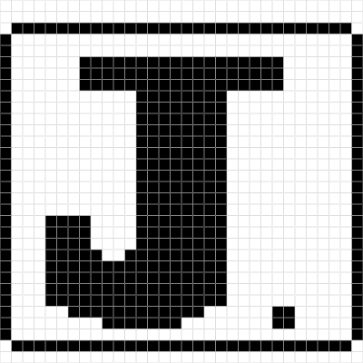
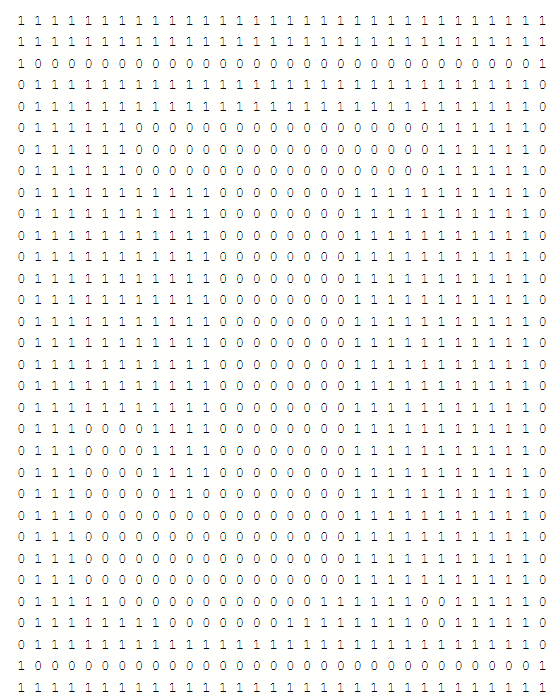
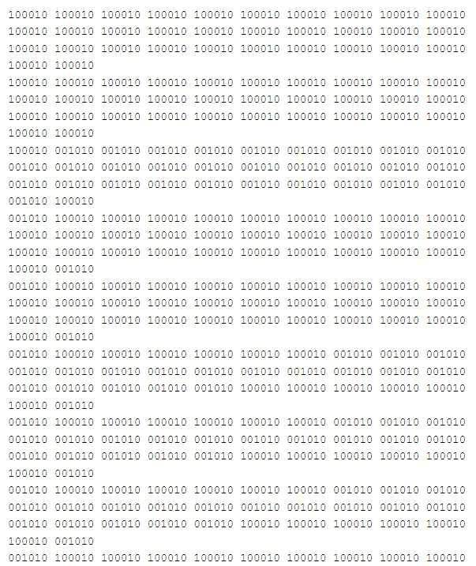

Thomas A. Edison HS
Web Design
10th Grade
Lab 6 Favicon, Banner and branding.
10/14/21
Jeter Arevalo
What is a Favicon?
A favicon is an image that is shown next to the url link that is on the task bar/tabs of the browser you are using. A favicon represents the website or can be the logo of the website you are on.
How do I add a favicon?
The way to add a Favicon you have to find an image you want as your logo or a symbol that represents you. Add a the link code that allows the icon to display then add the name of the image so the computer can locate the image and add it as the Favicon.
This is the logo I made to represent my work/websites I create. This logo was made with a bunch of zeros and ones.

This is the long code that holds a bunch of ones and zeros that makes up the 32x32 black and white image.

This is the the same logo as the black and white one but with color and with a lot of ones and zeros but in different combinations.

This is the long code of the color version of my Logo
What did I have to do in this lab?
This lab we needed to make a sketch of a logo that represents us. After creating a sketch we need to make a black and white version of it on the computer using 1 and 0. After we do that we need to make a color version of that black and white version we make. Lastly we have to make a banner for our website using photopea saying welcome.
Main Page